Vanderbilt · Learning Series · ATD facilitator guide · print edition
Emotional Intelligence & Interpersonal Skills, the facilitator guide

Run of show
| Screen | Full (min) | Core (min) |
|---|---|---|
| Welcome / QR | 3 | 2 |
| Objectives | 2 | 1 |
| The Chancellor's charge | 3 | — |
| Agenda | 1 | — |
| 01 · The case for EI | 8 | 5 |
| Manifesto | 1 | — |
| 02 · The map (four domains) | 10 | 7 |
| 03 · Self-awareness & the Johari Window | 10 | 7 |
| 04 · Name it to tame it | 8 | 5 |
| 05 · Active listening (triad drill) | 13 | 9 |
| 06 · The NVC reframe (OFNR lab) | 11 | 7 |
| 07 · Candor with care | 11 | 6 |
| Recap quiz | 4 | 4 |
| Capstone · EI commitment card | 5 | 5 |
| Glossary | 1 | — |
| Closing · commitment | 2 | 2 |
| Total | 93 | 60 |
Audience
Managers, team leads, and individual contributors who work through relationships: anyone whose week includes feedback, conflict, or collaboration. 9 to 24 works best (the listening drill runs in triads); scales larger with pairs and room votes. No prerequisites, though it pairs naturally with Navigating Difficult Conversations and Coaching for Performance.
Room setup
Projector + presenter device; learners on their own devices via the Welcome-slide QR; movable seating for triads (Speaker / Listener / Observer). Virtual: breakouts of 3 for the listening drill, 2 for the NVC conversion. This session touches real relationships: establish 'roles, never names' in the first minute and repeat it before the Johari mapper and the capstone.
Materials
- Projector or large display and the facilitator link open (this edition)
- Facilitator laptop with arrow keys or clicker; all notifications off
- Learner devices (BYOD) joining via the welcome-slide QR
- A few printed cheat sheets (cheatsheet.html) for anyone without a device
- Printed commitment cards (worksheet.html) as the no-device and projector-failure fallback
- Index cards or paper for the triad drill's Observer rubric scores
- Whiteboard or flip chart for the parking lot and the candor draft-aloud rewrites
A week before
- Read this guide end to end, then run BOTH editions start to finish, doing every exercise — including mapping your own Johari Window honestly. You'll be asked what's in your blind quadrant; having a real answer ready plays better than a deflection.
- Build your own commitment card in the capstone for a real relationship. You'll show the structure, never the contents.
- Send the pre-work invite (template on this page) with the calendar invite: bring one real working relationship with recurring friction, held privately.
- Decide your path now: Full (90-minute slot) or Core (60). Mark which videos you keep in class versus assign.
- Ask a trusted colleague the Eurich question yourself this week: 'What's one thing I do that gets in my own way?' Telling the room you did it, and that it stung a little, is the most credible minute of the session.
The day before
- Test the projector with the facilitator link; confirm the notes rail is readable from where you'll stand.
- Scan the welcome QR from the back of the room with your own phone; it must land on the learner edition.
- Cue and test both videos (Goleman, Edmondson); trim points are in the DO notes. Spot-check both start-to-trim so nothing surprises the room.
- Print 5 to 10 cheat sheets and commitment cards, plus index cards for the triad rubric.
- Re-read the tough-questions bank; say the 'isn't this just being manipulative?' response out loud once.
30 minutes before
- Welcome slide up as people arrive; it does the enrolling for you.
- Close every other tab and app; silence the machine.
- Test arrow-key navigation and one interaction (run a round of Guess the Number, open the NVC lab).
- Arrange seating so triads can form without furniture-moving theater.
- Write 'PARKING LOT' on the whiteboard, and 'ROLES, NEVER NAMES' where the room can see it all session.
When things go sideways
If Projector or the site fails mid-session: Teach from the printed cheat sheet: the four domains, name-it-to-tame-it, the listening rubric, OFNR, and the candor moves all work on a whiteboard. The triad drill and pair conversions never needed a screen; the capstone moves to the printed card.
If Learner devices can't join (wifi/filters): Run facilitator-only: the trainers play well on the projector with the room voting A/B/C by hands; the Johari mapper and capstone move to paper (the printed card covers both). You lose typing, not learning.
If You're 10+ minutes behind by the listening section (05): Declare the Core path silently: one triad rotation instead of three, cut remaining videos, and shrink debriefs to one voice. Never cut the triad drill entirely, the NVC lab, or the capstone; they carry the session's practice objectives.
If Someone starts sharing something too personal or names a colleague: Protect them and the norm in one warm move: 'Hold that — roles, not names, and you don't owe the room the details. The exercise works on the pattern, not the person.' Check in with them privately at the break; if something serious surfaced, point them to the EAP or HR privately, not from the front of the room.
If The room is skeptical — 'soft skills' eye-rolls, arms crossed: Don't argue; play Guess the Number and let the McKinsey wage data and the SHRM finding do the arguing. The frame that lands with skeptics: 'underpriced and in rising demand is an arbitrage, and the research is unusually one-sided.' Then get them into the trainers fast; skeptics convert through doing, not through claims.
If A learner treats affect labeling or NVC as therapy and starts processing live: Honor and bound it: 'That's real, and this room is a practice space, not a processing space.' Redirect to the structure (the label, the four parts) and move the emotional weight to the parking lot and a private follow-up. Keep the session about workplace skills.
Tough questions, ready answers
Q: Isn't all this — NVC, candor formulas, labeling — just manipulation with better branding?
Manipulation is engineering someone's response for YOUR benefit while hiding what you're doing. Everything today is the opposite: it makes your honest position MORE visible — the observation, the feeling, the need, the request are all disclosed. The test is simple: would the technique still work if the other person could see exactly what you're doing? NVC works better when they can. Manipulation dies in daylight.
Q: Is EQ even real science, or is it consultant-ware?
Both exist, which is why the session teaches two models. The Mayer-Salovey ability model is peer-reviewed, measurable science; Goleman's four domains are its workplace translation, and his 'twice as important' finding came from competency studies across nearly 200 companies. The consultant-ware is real too — which is why the honest move with any EQ assessment is to ask which model it's built on.
Q: Can adults actually change these behaviors, or is personality fixed by now?
Personality is fairly stable; behaviors are trainable at any age, and EI is behaviors — noticing, labeling, paraphrasing, requesting. That's exactly why the session ends in one practice aimed at one relationship instead of a personality overhaul. Nobody rewires; everybody can run one different behavior for two weeks, and that's how the research says this actually moves.
Q: What if I name my feeling and the other person weaponizes it?
Calibrate disclosure to safety — that's the Hidden quadrant working as designed. 'I feel anxious about the timeline' discloses enough to be honest without handing anyone ammunition. And if a relationship reliably punishes any disclosure, that's real information: the psychological-safety section is about that climate, and some conversations belong with your manager or HR, not in an NVC frame.
Q: Isn't psychological safety just lowering the bar so nobody can be criticized?
Edmondson is blunt about this: psychological safety is NOT niceness and not comfort. It's a climate where candid feedback can be given and heard — safety exists so you can RAISE the bar without people hiding mistakes. Safety without standards is a book club; standards without safety is fear. The target is both, and the candor section is literally practice at holding both.
Q: My manager needs this more than I do. What am I supposed to do with that?
Probably true for someone in every room, and you still only control one node of the network: you. Two honest moves: model it — paraphrase and label in meetings, because behavior is contagious sideways and upward — and use the practices to manage the relationship you have, not the manager you wish you had. And notice the trap: 'they need it more' is exactly what a blind spot sounds like from the inside.
Copy-paste templates
Pre-work invite (paste into the calendar invite)
Subject: Before our Emotional Intelligence session. One thing to bring: a real working relationship with some recurring friction — a check-in that keeps turning tense, feedback you've been avoiding, a peer you talk past. You will never be asked to name the person or share details; every exercise runs on roles, and everything you type stays on your screen. Come ready to work on it privately. That's it — no reading, no assessment.
7-day pulse (send one week after)
Subject: One week later — did the first rep happen? Three quick lines, reply whenever: 1) Did you run the practice from your commitment card in the real conversation? 2) What did you NOT do that you usually do? 3) What did the other person do differently, if anything? Replies come to me only. Not yet? The card still works; this note is your nudge.
30-day self-check re-poll (send a month after)
Subject: Thirty days of the practice. Two questions, same scale as the room: 1) Fist to five — how confident are you now in the practice you committed to? 2) Has anyone answered your blind-spot question ('what's one thing I do that gets in my own way?'), and what came back? Reply with a number and a line. The before-and-after pair is how we know this session did more than feel good.
After the session
Seven days out, send the pulse: 'Did you run your first rep? What did you NOT do that you usually do? What did they do differently?' At 30 days, send the self-check re-poll: the same fist-to-five confidence question from the close, plus 'has anyone asked the blind-spot question yet, and what came back?' The count of completed first reps is the program's headline Level 3 metric.
Welcome / QR Full 3 min · Core 2
Get every learner into the experience on their own device and set the two norms that make personal material safe: roles never names, and nothing typed leaves the screen.
Say
“Welcome. Point your camera at that code before we start. Today is about the skill that research keeps finding at the center of leadership — and it touches real relationships, so two ground rules for the next ninety minutes: we use roles, never names. And everything you type today stays on your screen; nothing is saved or sent anywhere. This is a practice room.”
Do
- Have this slide projected as people arrive.
- Point at the QR and get phones up before you say anything else.
- Set the two norms explicitly and early: roles, never names; private exercises stay on their screens.
- Confirm by show of hands that most of the room has the site open before advancing.
Ask
“Quick calibration, shout it out: when someone says 'emotional intelligence,' what's your honest first reaction — useful skill, corporate buzzword, or therapy at work?”
Expect:
- A mix; at least one confident 'buzzword'
- Useful-but-vague is the most common answer
- Someone mentions a great (or terrible) boss
Respond: Welcome the skeptics by name: 'Perfect — the first game is built for you. Four research findings, real numbers, and most rooms guess them wrong.'
Validate: 80%+ of the room has the deck open on a device; the room can repeat the 'roles, not names' norm back to you.
Watch for: Anyone visibly bracing for a 'feelings workshop.' The frame that relaxes them: today is skills and reps, and the research is unusually hard-nosed.
Transition: “Here's exactly what you'll walk out able to do.”
Core path: Core: one scan prompt, both norms stated once, move on.
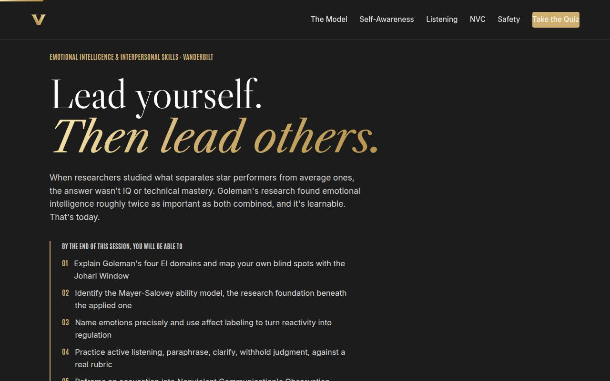
Objectives Full 2 min · Core 1
Set the contract: six capabilities, ending in one committed practice aimed at one real relationship, with a date.
Say
“Six things by the end: you'll know the four-domain map and where your own blind spots hide, the science underneath it, how naming an emotion precisely turns reactivity into a choice, how to listen so people actually feel heard — scored against a rubric, not vibes — how to rebuild an accusation into a request that works, and how to say a hard thing so it can be heard. It all lands in one artifact: a commitment card for a relationship you actually have.”
Do
- Read the six objectives briskly, in plain language.
- Land on the last one: this session ends with a REAL commitment card — one relationship, one practice, one date.
- Name the sources once for credibility: Goleman's HBR research, Mayer-Salovey, Eurich, UCLA's affect-labeling studies, Rosenberg, Edmondson.
Validate: Learners can say what the capstone will be (one practice aimed at one real relationship, dated).
Watch for: The montage pulling attention; advance once the objectives have been read, not when the video loops.
Transition: “Seven ideas, in a deliberate order.”
Core path: Core: objectives 1 and 6 out loud; the rest on screen.
The Chancellor's charge Full 3 min · Core skip
Place the course inside the institutional vision: relationships carry the university's speed, bets, and reputation, and emotional intelligence is how relationships hold.
Say
“One minute of altitude before the skills. Chancellor Diermeier's vision is one sentence: Vanderbilt will define the great university of the 21st century, and be it. Universities move through working relationships: speed, bold bets, and reputation all travel through people who can hear each other. Self-awareness and listening look like private skills, and they are also how an institution this ambitious holds together. Our motto is 'dare to grow,' and the first growth is seeing yourself clearly.”
Do
- Read the vision sentence verbatim; give it a beat.
- Walk the three focus cards, one line each, landing on each 'personal translation.'
- Point at the flywheel card: relationships carry every resource the university attracts. Don't teach it; the model comes next.
Transition: “That's the why. Here's the plan for the session.”
Core path: Core: read the vision sentence, gesture at the three focuses, move on; under a minute.
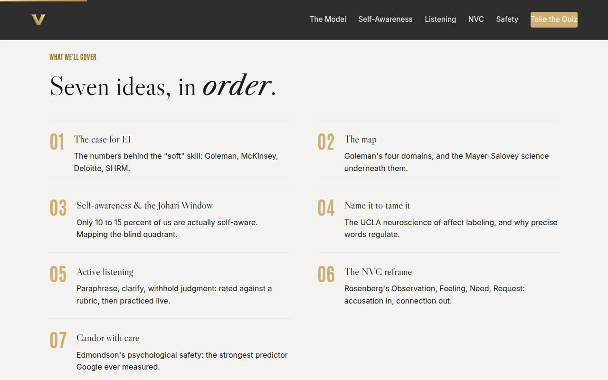
Agenda Full 1 min · Core skip
Show the arc once so learners can place each tool as it arrives: evidence, map, self, then others.
Say
“The arc is simple: first the evidence, then the map, then you — noticing and naming your own weather — and then the other person: listening, reframing, and saying the hard thing well.”
Do
- Walk the seven items in one breath each.
- Point out the shape: the case (01), the map (02), yourself (03–04), the other person (05–07).
Validate: None needed; this is orientation.
Watch for: Don't teach here; every concept has its own slide.
Transition: “Start with the evidence, because half of you just called this a buzzword.”
Core path: Core: skip entirely; the deck's structure carries it.
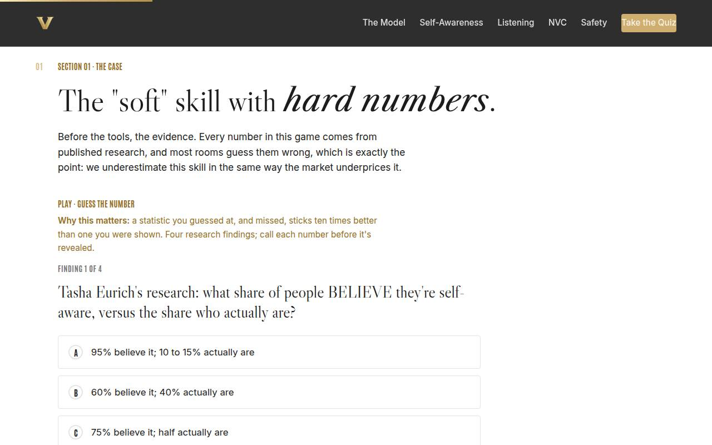
01 · The case for EI Full 8 min · Core 5
Convert skeptics with published numbers they guess at (and miss), establishing EI as an underpriced, rising-demand professional skill.
Say
“Before any tools, the evidence — and I want you to guess. When researchers studied what separates star performers from average ones across nearly two hundred companies, emotional intelligence came out roughly twice as important as IQ and technical skill combined, and the gap widened at senior levels. Most rooms guess those numbers wrong, which is exactly the point: we underestimate this skill the same way the market underprices it. Four findings, call your number before the reveal.”
Do
- Frame the game: four research findings, guess each number before it's revealed. Missed guesses are the point; they stick.
- Run Guess the Number on devices, or as a room vote on the projector; call for guesses out loud before each reveal.
- After the reveal round, land the arbitrage frame: underpriced by the market, rising in demand — that's the professional case.
- Run the quick check (the 'twice as important' finding), then the pair activity: best leader you ever had — technical edge or how they made people feel?
- Count the hands and connect the count to Goleman: the room's own history usually replicates the study.
Ask
“Think of the best leader you ever worked for. Was their edge technical mastery — or how they made people feel and perform?”
Expect:
- A heavy majority on 'how they made people feel'
- One or two genuine 'technical' answers, usually early-career memories
- Stories start to surface; energy rises
Respond: Count the hands out loud and name it: 'The room just replicated Goleman's study from memory. Hold onto that leader — you'll check them against a map in two slides.'
Debrief: Four sources, one direction: EI predicts performance, empathy predicts leadership, demand is rising, and respect outranks pay. Underpriced and in demand is an arbitrage.
Validate: Quick check correct; the best-leader vote lands visibly on the 'how they made people feel' side and the room sees it.
Watch for: A statistics skeptic litigating one study's methodology. Don't defend a single number; the case is the convergence — four independent sources, one direction. Park deep methodology questions.
Transition: “So if it matters that much, what exactly IS it? One sentence first — the whole session in nine words.”
Core path: Core: Guess the Number as a fast room vote, quick check stays, best-leader activity becomes one show of hands with no pair discussion.
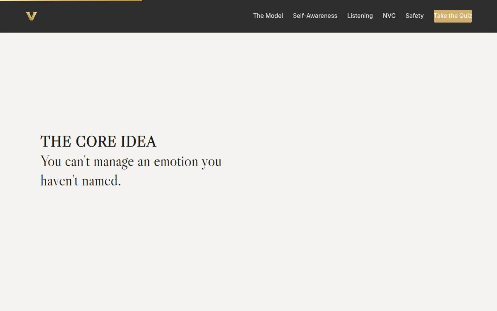
Manifesto Full 1 min · Core skip
One beat of stillness to lock the session's core idea before the model arrives.
Say
“You can't manage an emotion you haven't named.”
Do
- Let the line animate word by word. Say nothing until it finishes.
- Read it once, slowly, then advance.
Validate: None; this is pacing.
Watch for: The urge to talk over it. Don't.
Transition: “Everything today unpacks that sentence. Here's the map.”
Core path: Core: skip; say the line yourself as you pass it.
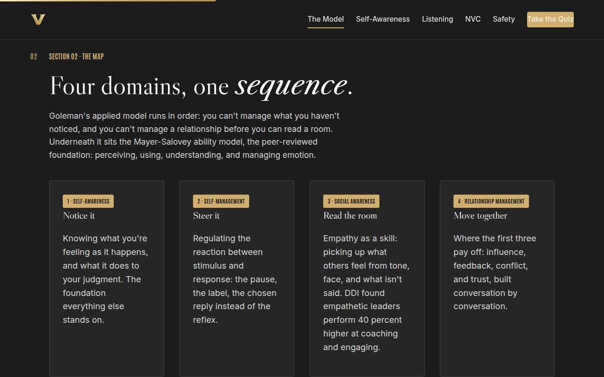
02 · The map (four domains) Full 10 min · Core 7
Install Goleman's four domains as a sequence (notice → steer → read → move together) with the Mayer-Salovey science named underneath, and make the model sight-readable in real moments.
Say
“Four domains, and the order is the insight. Self-awareness: noticing what you're feeling while it's happening. Self-management: the pause between stimulus and response. Social awareness: reading what everyone else is feeling — empathy as a skill, not a trait. And relationship management, where the first three pay off. It runs in sequence: you can't steer what you haven't noticed, and you can't manage a relationship before you can read the room. Underneath this sits Mayer and Salovey's ability model — the peer-reviewed science that made EI measurable — and knowing both keeps you honest: this is a testable ability, not a horoscope.”
Do
- Walk the four cards IN ORDER and stress the sequence: you can't manage what you haven't noticed; you can't manage a relationship before you can read a room.
- Name the two models honestly: Mayer-Salovey is the peer-reviewed ability model; Goleman is its workplace translation. One line each.
- Play the Goleman video (5 min) on the Full path.
- Send them to Name the Domain: five workplace scenes, name the domain at work or missing.
- Run the solo activity from Go deeper: rank your own four domains, strongest to weakest, and write one moment the weakest one cost you something.
Ask
“Gut call, ten seconds: which of the four is your weakest domain — and what did it cost you most recently?”
Expect:
- Self-management confessions: the sharp email, the interruption
- Social awareness: 'I miss the room's temperature'
- A few 'I don't know' — which IS the self-awareness answer
Respond: For the 'I don't know's, warmly: 'That answer places you — domain one is where you start, and the next section is built for you.' Everyone: write the moment down; the capstone will aim a practice at exactly that spot.
Debrief: Four domains, one sequence, and each of you now has a target. The next two sections work the self side; the three after that work the people side.
Validate: 4+ of 5 on the trainer for most of the room; every learner has a written weakest-domain moment (it feeds the capstone).
Watch for: The model turning into a personality test ('I'm a self-awareness person'). Keep it behavioral: these are four trainable skill sets, not four types of people.
Transition: “Domain one first — and the research on it is genuinely uncomfortable.”
Core path: Core: cards fast, trainer on devices, cut the video (assign as the week's watch); the self-ranking shrinks to thirty silent seconds.
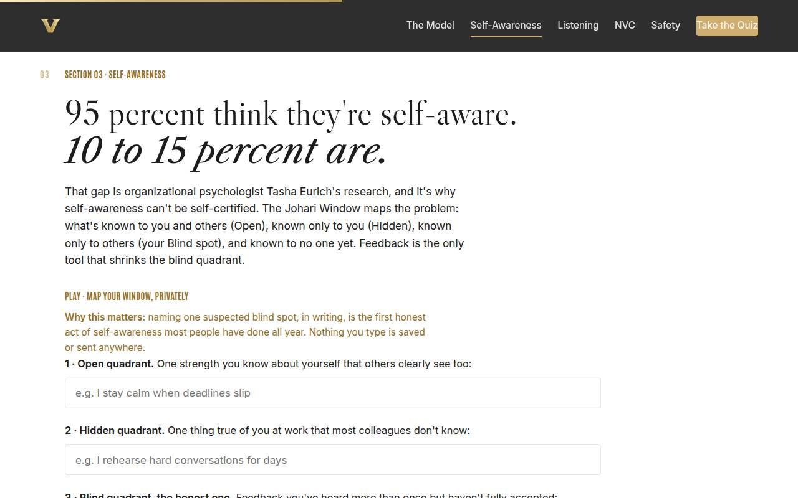
03 · Self-awareness & the Johari Window Full 10 min · Core 7
Land the Eurich gap (95% believe, 10–15% are), install the Johari Window, and get each learner one written suspected blind spot plus the one feedback question that shrinks it.
Say
“Here's the most uncomfortable statistic of the day: ninety-five percent of people believe they're self-aware. When organizational psychologist Tasha Eurich actually measured it, ten to fifteen percent were. Which means most of us are wrong about the thing we're most confident about — ourselves. The Johari Window maps why: there's a quadrant of you that others can see and you can't, and it is invisible to introspection by definition. You cannot journal your way into your blind spot. Someone has to tell you — and the next three minutes, entirely on your own screen, is where you write down what you suspect they'd say.”
Do
- Land the gap first: 95 percent believe they're self-aware; 10 to 15 percent are. Let it sit for a beat.
- Walk the four quadrants in one line each: Open, Hidden, Blind, Unknown — and the mechanism: feedback shrinks Blind, disclosure shrinks Hidden.
- Send them to the private mapper: three fields, nothing saved or sent. Repeat the privacy line before they type.
- Field 3 is the session's most honest moment: feedback heard more than once but not fully accepted. Give it quiet time.
- Run the pair activity, trust permitting: share ONE Open-quadrant item, partner confirms or gently adjusts. The brave option — asking the Eurich question — is optional and should stay optional.
- Run the quick check: what shrinks the Blind quadrant.
Ask
“Why can't self-reflection alone shrink the Blind quadrant — what's the mechanism that makes feedback the only tool that reaches it?”
Expect:
- 'Because you can't see what you can't see' — the definitional answer
- Others have data about you that you don't: your face, your patterns, your impact
- Someone notes power makes it worse: senior people get less honest feedback
Respond: Anchor the definitional answer and add Eurich's twist: internal and external self-awareness don't correlate — knowing yourself and knowing how others experience you are different skills. And yes: every promotion buys you less honest feedback, which is why you have to ask for it on purpose.
Debrief: One question shrinks the quadrant: 'What's one thing I do that gets in my own way?' Asked of someone who sees you weekly. The answer goes in the window — with gratitude, not a rebuttal.
Validate: Quick check correct (feedback, not introspection); every learner has typed or written a suspected blind spot privately.
Watch for: Oversharing in the pair round — the exercise is calibrated to the Open quadrant for a reason. Also watch the cynic who writes nothing: invite them to map a former colleague instead; the model installs either way.
Transition: “So you've mapped what you don't know about yourself. Next: the skill of catching what you're feeling while it's still happening — and the neuroscience is on your side.”
Core path: Core: gap, quadrants, and the private mapper stay (protect field 3's quiet minute); the pair share drops to an optional 60 seconds; assign the Eurich TEDx as the week's watch.
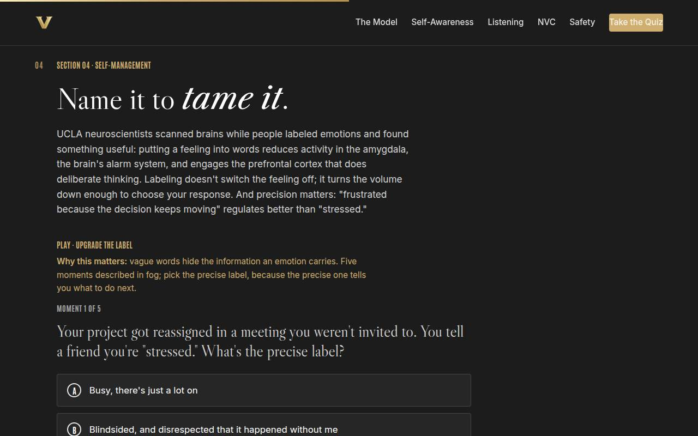
04 · Name it to tame it Full 8 min · Core 5
Install affect labeling as a 90-second usable move — spike, precise silent label, breath, chosen response — backed by the UCLA evidence, with emotional granularity as the multiplier.
Say
“UCLA scanned brains while people labeled emotions and found something you can use by Thursday: putting a feeling into words reduces activity in the amygdala — the alarm system — and engages the prefrontal cortex, the part that thinks. The label doesn't switch the feeling off; it turns the volume down enough to choose your response. And precision matters: 'stressed' gives you nothing to act on, but 'frustrated because the decision keeps moving' tells you exactly what conversation to have. Your grandmother called it counting to ten. She was right, and now there's a brain scan.”
Do
- Teach the science in one line: naming a feeling reduces amygdala activity and engages the prefrontal cortex — volume down, not off.
- Stress precision: 'frustrated because the decision keeps moving' regulates better than 'stressed.' Granularity is the multiplier.
- Send them to Upgrade the Label: five foggy moments, pick the precise label — because the precise one tells you what to do next.
- Walk the 90-second version on the gold card: spike → silent precise label → one breath → chosen response.
- Run the solo activity: last workplace emotional flash, labeled three levels deep — vague word, precise word, 'because' clause.
Ask
“Why would the PRECISE label — 'defensive because that landed as criticism' — beat the vague one, 'stressed,' as a guide to what you do next?”
Expect:
- The precise one contains the cause, so it points at an action
- Vague words blur different feelings that need different responses
- Someone says it just feels truer — closer to the actual thing
Respond: Anchor the first: an emotion is information, and precision is the resolution of that information. 'Stressed' is a check-engine light; 'defensive because…' is the diagnostic code. One gets you a shrug, the other gets you a fix.
Debrief: Spike, silent precise label, one breath, chosen response. Ninety seconds, real neurology, no one even knows you did it.
Validate: 4+ of 5 on the trainer; learners can recite the 90-second sequence and have one three-level label written.
Watch for: Two ditches: 'so I should suppress it' (no — labeling is the opposite of suppression; it's acknowledgment with a handle) and 'I should announce my feelings constantly' (the label is silent; disclosure is a separate, calibrated choice).
Transition: “That's the inward half of the session. Now we turn outward — and the first outward skill is the one everyone thinks they're good at.”
Core path: Core: science in one line, trainer on devices, 90-second card verbatim; the solo drill shrinks to naming the precise word only.
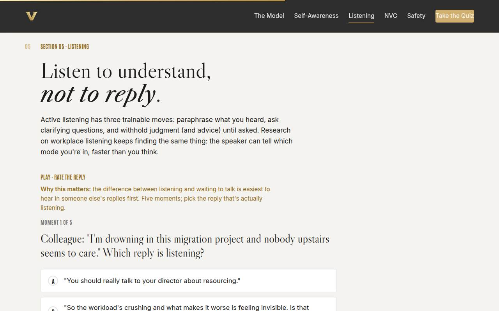
05 · Active listening (triad drill) Full 13 min · Core 9
Install the three trainable moves (paraphrase, clarify, withhold judgment) and give every learner one scored rep in the triad drill — the session's deepest practice block.
Say
“Everyone in this room believes they're a good listener, and the last section told you what that belief is worth unaudited. Active listening is three trainable moves: paraphrase what you heard until they say 'yes, that.' Ask questions that open rather than steer. And the hard one — withhold judgment AND advice until asked. The moment you offer a fix, the speaker stops exploring and starts evaluating your fix, and the conversation quietly becomes about you. In a minute you'll each get scored on this by a human holding a rubric. Being scored once changes how you hear yourself in every conversation after — that's why we do it.”
Do
- Teach the three moves and the hard rule: no advice, no 'me too,' no fixing — until asked.
- Send them to Rate the Reply first: five moments, pick the reply that's actually listening. It calibrates ears before the drill.
- Walk the rubric on the gold card: attention, paraphrase accuracy, judgment withheld — scored 1 to 3 each.
- Run the triad drill: Speaker (real, low-stakes work frustration), Listener (paraphrase, clarify, reflect only), Observer (scores the rubric, gives 30 seconds of feedback). Three minutes per round.
- Rotate all three seats on the Full path. Call the three-second silence rule out loud during round one.
- Debrief the Observer seat specifically: it teaches the most, and learners should notice that.
Ask
“After the drill, Observers first: what was the hardest rubric line for your Listener — and Listeners, did you feel the pull to fix?”
Expect:
- Judgment-withheld fails most: advice leaked in as questions
- Listeners confess the fix-it itch was nearly physical
- Paraphrases drifted into interpretation rather than reflection
Respond: Name the pattern with affection: 'The fix-it reflex is competence trying to help — it's just mistimed. Paraphrase first, and the fix earns its slot later, if they ask. And notice the silence: three seconds after they finish is where the real material surfaced.'
Debrief: The Observer seat taught the most — you could see the moves because you weren't in the current. That observing ear is the one to keep; run the rubric on yourself in your next real conversation.
Validate: 4+ of 5 on Rate the Reply; every learner has been scored once as Listener and can name their weakest rubric line.
Watch for: Advice leaking in dressed as questions ('have you tried…?' is advice with a question mark). Observers grading soft — remind them the score is a gift. Groups of two where the room doesn't divide by three: drop the Observer and self-score.
Transition: “Listening earns you the right to be heard. Now the harder move: saying a charged thing without handing over ammunition.”
Core path: Core: trainer stays, ONE triad rotation instead of three (everyone still sits in one seat), debrief in one voice. This is the floor — never cut the drill entirely.
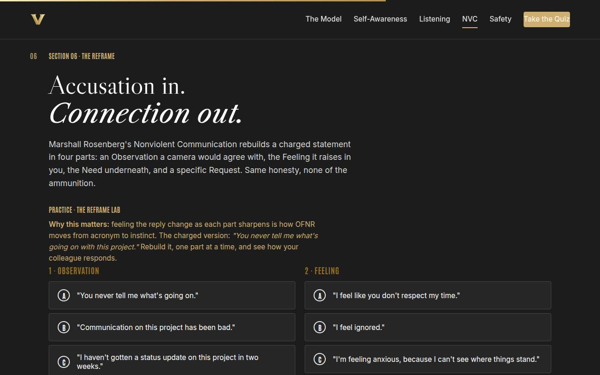
06 · The NVC reframe (OFNR lab) Full 11 min · Core 7
Install Rosenberg's Observation-Feeling-Need-Request structure through the graded lab (feel the reply change as parts sharpen) and one pair conversion of a fresh accusation.
Say
“Here's the move for the moment you're upset and about to say something true in the most flammable possible way. Marshall Rosenberg's Nonviolent Communication rebuilds the charged statement in four parts. An Observation a camera would agree with — 'the last two status meetings happened without an update' — not 'you never tell me anything,' which is a verdict. A Feeling you actually own: 'I feel anxious,' not 'I feel ignored' — ignored is a diagnosis of them wearing a feeling's clothes. The Need underneath: 'I need to be able to plan reliably.' And a Request specific enough to act on, that survives hearing no. Same honesty. None of the ammunition. The lab lets you feel the reply change as each part sharpens — go break it and fix it.”
Do
- Walk the four parts with the tests attached: an Observation a camera would agree with; a Feeling you own (not a diagnosis of them); the Need underneath; a Request that survives hearing 'no.'
- Send them to the Reframe Lab: rebuild 'you never tell me what's going on with this project,' one part at a time, and watch the colleague's response change with the quality of the parts.
- Debrief the lab's teaching moments: judgments smuggled into observations, and 'I feel ignored' as a faux feeling — a verdict wearing a feeling's clothes.
- Run the pair conversion: 'you're always late to my meetings' and 'you just don't listen to my ideas,' split between partners, all four parts each.
- Have the best conversions read aloud; tell the room to listen for the difference in their own chest.
Ask
“The lab gave you a weak reply and a strong one. What exactly changed in the colleague's response when your observation went from verdict to camera-footage?”
Expect:
- They stopped defending and started explaining
- The 'always/never' version triggered a counter-attack about MY behavior
- The request got a real answer instead of a vague 'fine, whatever'
Respond: Anchor it: 'A verdict invites a defense attorney; an observation invites a witness. You can hear the moment the other person stops preparing their rebuttal and starts actually processing — that's the whole return on the structure.'
Debrief: Four parts, two traps: judgments dressed as observations, demands dressed as requests. A request survives hearing no; a demand punishes it — and the other person can always tell which one they got.
Validate: Most learners reach the strong reply in the lab; two pair conversions read aloud contain all four parts with a camera-true observation.
Watch for: The two failure points from Rosenberg's own teaching: observations that are secretly judgments ('always,' 'never' are verdicts), and requests that are secretly demands. Also the objection 'this sounds robotic' — answer honestly: scaffolding sounds like scaffolding; fluency comes with reps, and the structure matters more than the phrasing.
Transition: “OFNR works one conversation at a time. The last section is about the climate that decides whether hard truths can be said at all.”
Core path: Core: lab stays at full length (it IS the instruction); pair conversion shrinks to one accusation converted solo, no read-aloud round.
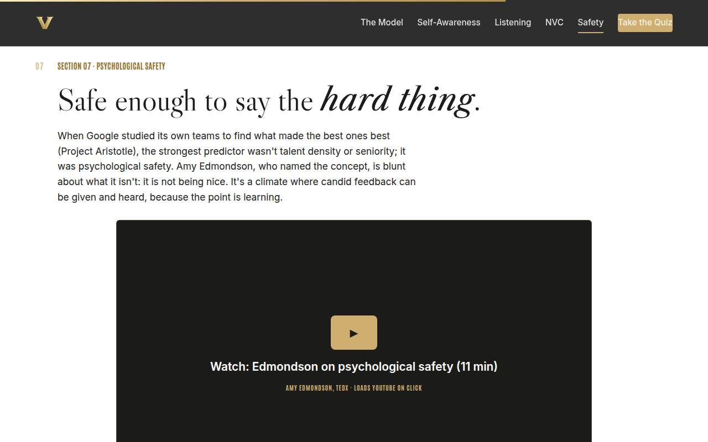
07 · Candor with care Full 11 min · Core 6
Install Edmondson's psychological safety accurately (not niceness; safety plus standards) and drill the three-move opener: shared goal, work-focused observation, genuine question.
Say
“When Google studied its own teams to find what made the best ones best, the strongest predictor wasn't talent density or seniority. It was psychological safety — and here's where everyone gets it wrong. Amy Edmondson, who named the concept, is blunt: it is not being nice. Niceness is often avoidance wearing a smile. Psychological safety is a climate where the hard thing can be SAID — candidly — and heard, because the point is learning. The skill is candor with care, and it has three moves you can hear in every good opener: name the shared goal, state the concern as an observation about the work, and end in a genuine question.”
Do
- Land Project Aristotle first: Google's strongest predictor of team effectiveness wasn't talent — it was psychological safety.
- Correct the misread immediately: Edmondson is blunt that safety is NOT niceness; it's a climate where candor is safe because the point is learning.
- Play the Edmondson video, first ~5 minutes, on the Full path.
- Send them to Judge the Opener: five opening lines for a real scenario — candor with care, harshness, or avoidance dressed as kindness.
- Walk the three moves: name the shared goal, state the concern as an observation about the WORK, invite their view as a genuine question.
- Run the group draft-aloud: small groups draft ONE opener, room calls each one, then rewrite the harshest and softest live until both land.
Ask
“Which is more common on your team, honestly: harshness — or avoidance dressed as kindness?”
Expect:
- Avoidance wins in most rooms, often by a landslide
- Someone defends niceness as culture or respect
- A brave voice names the cost: the problem everyone knew about for a year
Respond: For the niceness defense, gently: 'Kindness tells someone the truth while caring about them. Niceness protects YOUR comfort and calls it protecting theirs.' Then land the cost: unsaid truths don't disappear; they compound.
Debrief: Safety plus standards is the target quadrant. Your opener names the goal, observes the work, and asks a real question — direct about the problem, unmistakably on the same team.
Validate: 4+ of 5 on the trainer; the room can correctly call a 'nice' avoidant line as avoidance, and both live rewrites land in the target quadrant.
Watch for: The quadrant collapse: rooms hear 'safety' and settle into niceness. Keep the 2x2 alive: safety without standards is a book club; standards without safety is fear. Neither ships great work.
Transition: “That's the full toolkit. Quiz first, then the card that aims one of these tools at one real relationship.”
Core path: Core: Aristotle + not-niceness in ninety seconds, trainer on devices, cut the video (assign); the draft-aloud shrinks to one group's line judged by the room.
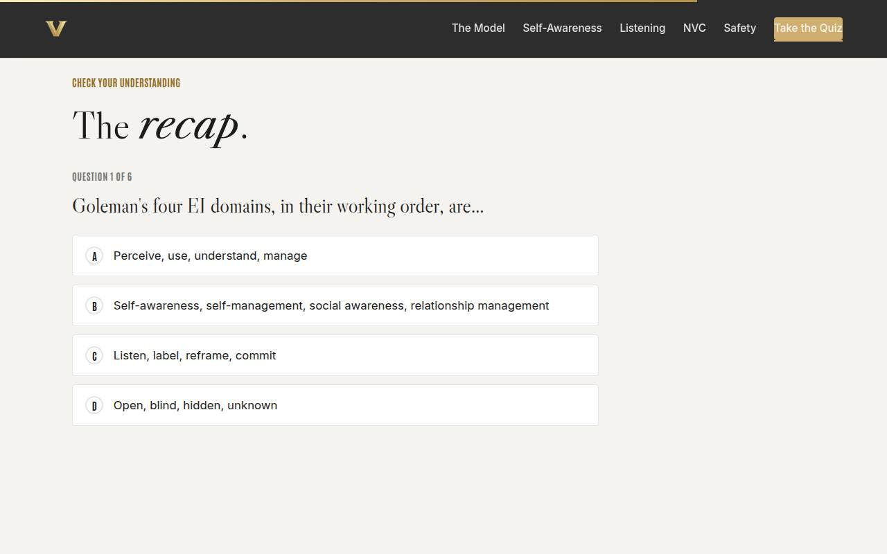
Recap quiz Full 4 min · Core 4
Score the session's knowledge against the six objectives before the capstone applies it (Kirkpatrick Level 2).
Say
“Six questions, one per big idea. This is the systems check before you write the card that leaves the room with you.”
Do
- Everyone takes it on their own device, all six questions.
- Ask for hands on 5-or-better; celebrate briefly.
- For any question the room visibly missed, do a 30-second reteach from the relevant slide, not a lecture.
Validate: Room mode at 5/6 or better. The quiz maps onto the objectives, so misses tell you exactly what to reteach.
Watch for: Racing. Frame it as a check before the commitment, not a race.
Transition: “Now the only part of today that changes anything.”
Core path: Core: keep at full length; this is the objectives' evidence.
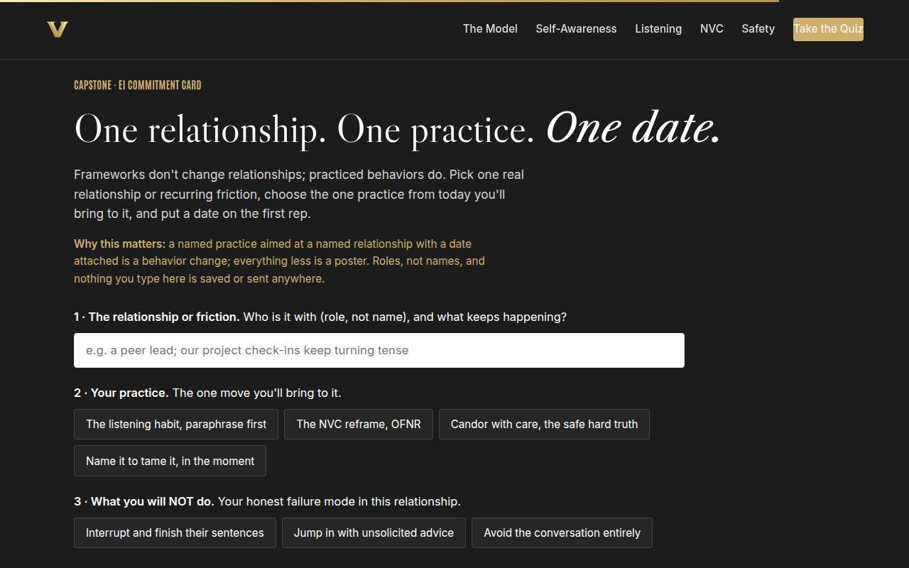
Capstone · EI commitment card Full 5 min · Core 5
Convert the session into one dated behavioral commitment: one relationship, one practice, one named failure mode to avoid, one date. The transfer artifact and the Level 3 seed.
Say
“Frameworks don't change relationships; practiced behaviors do. Pick one real relationship or recurring friction — role, not name. Choose the ONE practice from today you'll bring to it: the listening habit, the reframe, candor with care, or name-it-to-tame-it. Then the honest field: what you will NOT do, because you know your failure mode in this relationship — and finally, when the first rep happens. A named practice aimed at a named relationship with a date attached is a behavior change. Everything less is a poster.”
Do
- Frame it: frameworks don't change relationships; practiced behaviors do. One relationship, one practice, one date.
- Repeat the privacy norm before anyone types: roles not names, nothing saved or sent.
- Give quiet time; this is individual work. Circulate for stuck learners: the weakest-domain moment from Section 02 is the raw material.
- Point at field 3 — what you will NOT do — as the honest one: the failure mode is half the commitment.
- Push the build moment, then the close-the-loop line: after the first rep, write one line about what went differently. That line is the evidence.
Ask
“What's most likely to make you skip the first rep — and what's your plan for that obstacle?”
Expect:
- The moment will be tense and I'll default to old habits
- No natural opening; the conversation might not come up
- Fear the other person will notice something's different
Respond: Old habits: 'that's what the NOT field is for — you only have to catch yourself once.' No opening: 'the listening practice needs no opening; every conversation is a rep.' Being noticed: 'they'll notice you paraphrased before arguing. That's not a risk; that's the intervention working.'
Debrief: One relationship is about to get a different version of you for two weeks. That's how this research says change actually happens — one practiced behavior at a time, not a personality overhaul.
Validate: Every learner builds a card (all four fields). The card plus the 7-day pulse plus the 30-day re-poll is the evidence chain.
Watch for: Vague relationships ('everyone at work') — push to ONE role and ONE recurring friction. And practice-shopping: the right practice is the one aimed at their weakest domain, not the one that sounds most impressive.
Transition: “Reference shelf in one breath, and then the send-off.”
Core path: Core: protect at full length; never cut the capstone.
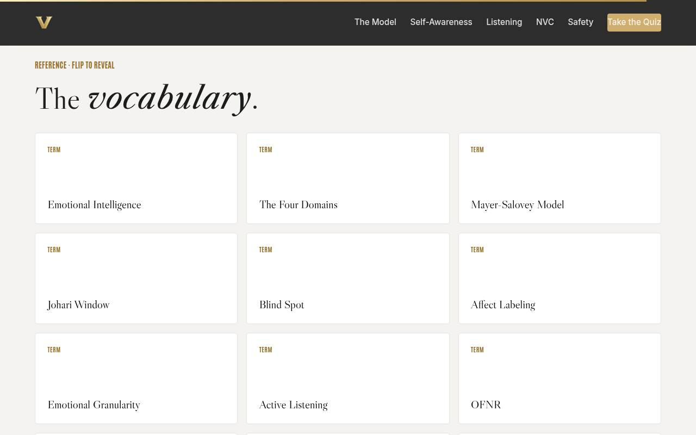
Glossary Full 1 min · Core skip
Signpost the reference layer; it lives here for after the session.
Say
“Every term from today lives here as flip cards — including 'faux feeling,' for the next time someone tells you they feel ignored.”
Do
- Flip one card on the projector (Faux Feeling is a good pick; it gets a laugh and reteaches NVC).
- Tell them it's all here whenever they need the vocabulary back.
Validate: None; reference material.
Watch for: Don't tour all thirteen cards; one flip makes the point.
Transition: “Last slide. One rep left.”
Core path: Core: skip; point at it verbally from the closing slide.
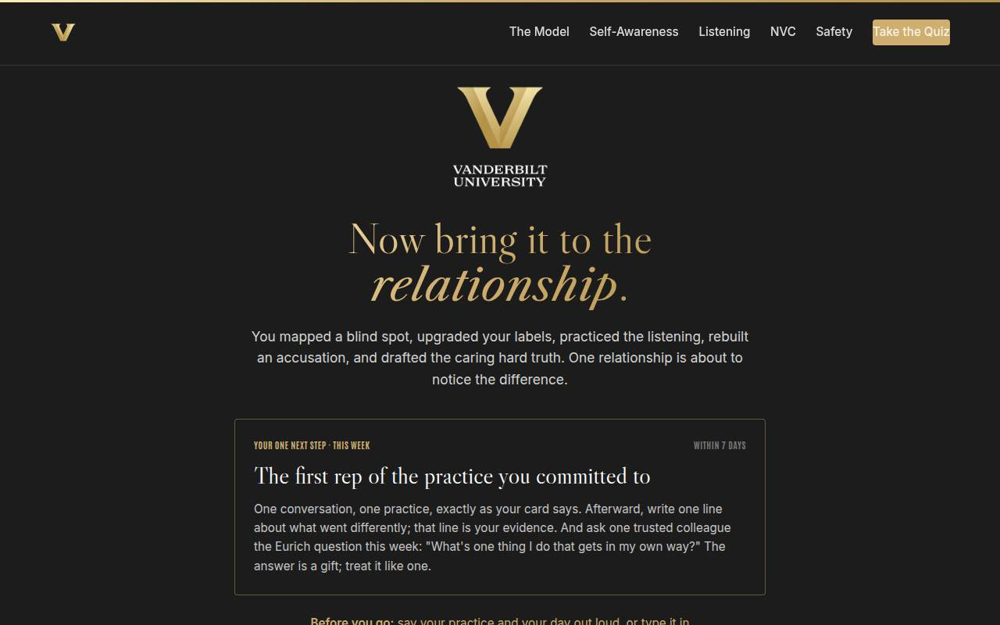
Closing · commitment Full 2 min · Core 2
Convert cards into spoken commitments, capture the Level 1 reaction check, and point at the follow-up chain.
Say
“The whole session in one breath: the evidence says this skill is underpriced, the map says start with noticing, the window says ask for the feedback you can't generate yourself, the label turns the volume down, the rubric makes listening real, the four parts disarm the accusation, and candor with care is how teams get better instead of quieter. You have a card. Before you go: your practice, and your day. Say it out loud — spoken commitments stick.”
Do
- Read the featured card: the one next step is the first rep of the committed practice, within 7 days, plus the Eurich question to one trusted colleague.
- Run the fist-to-five (Level 1): 'On a fist to five, how confident are you in your practice?' Scan and note the number for your session log; the 30-day re-poll asks it again.
- Run the commitment round, popcorn style: practice and day, out loud or in chat.
- Point at the cheat sheet and commitment card buttons, and the Eurich TEDx as the week's watch.
- Tell them the 7-day pulse is coming, then land the last line and stop on time.
Ask
“Around the room, one line each: your practice, and your day.”
Expect:
- 'The listening habit, tomorrow's one-on-one'
- 'The reframe, Thursday's check-in'
- Someone commits to the blind-spot question itself
Respond: Thank each one, no commentary. For the blind-spot committer, warmly: 'That's the bravest card in the room — remember, the answer is a gift. Say thank you, not "but."'
Debrief: The session's success metric isn't in this room; it's the 7-day pulse: how many first reps actually ran, and what the other person did differently.
Validate: Fist-to-five mostly 3+ (Level 1); a majority state a practice-and-day out loud or in chat. Count both; with the pulse and the 30-day re-poll, that's your evidence chain.
Watch for: Cards that quietly skipped the date. The commitment round catches them: no day, no commitment; help them pick one on the spot.
Transition: “Go run the rep. And when the answer to your blind-spot question comes back — and it will sting a little — write it down. That sting is the sound of the window opening.”
Core path: Core: fist-to-five plus a fast commitment round; the ending survives every cut.
Generated from facilitator/notes.json. The on-screen facilitator edition lives at ./ alongside this guide.